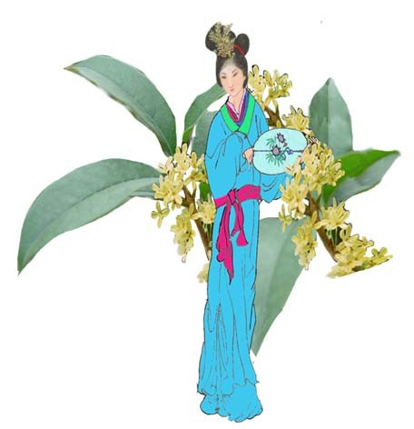

中國十二月的花神 江銘輝 五夢網
十二月的花神
美麗的世界不外乎是由天上的星星、地上的花朵和人世間的愛共同組成。人們自古以來對花就有特殊的感情。例如：「感時花濺淚，恨別鳥驚心。」是杜甫看到花而傷心流下眼淚，「採菊東籬下。悠然見南山」是陶淵明以菊表示閒雲野鶴，「牧童遙指杏花村」是杜牧以杏花表示酒，「無可奈何花落去，似曾相識燕節來」這是晏殊看到花落時，感到光陰一去不回頭。各種不同的花就像各種不同的人以及不同的人生。
花神或稱「花姑」，最初始於唐朝，傳說每年農曆二月十二是百花的生日，每到這天人們以芳酒鮮花祭花神，請戲班演戲，演出十二個月各月花神的故事。並依照禮俗祭拜花神，向花神祝壽，以祈願風調雨順、富貴平安、吉祥如意。而隨著季節的替換，百花紛紛綻放，繽紛大地，為人們的生活添加色姿，於是愛花借花的人也為百花留下許多動人的傳說。加上歷代文人墨客的吟詠百花，從而造就出十二花神，正所謂「日日有花開，且月有花神」。
這十二月（請記住是農曆，不是今日的國曆，二者相差一個多月）的花及花神是：
正月：梅花，花神：壽陽公主。
二月：杏花，花神：楊貴妃。
三月：桃花，花神：息夫人。
四月：牡丹花，花神：男花神：李白；女花神：麗娟；貂嬋。
五月：石榴花，花神：鍾馗。
六月：荷花，花神：西施。
七月：蜀葵，花神：李夫人。
八月：桂花，花神：徐惠。
九月：菊花，花神：陶淵明。
十月：芙蓉花，花神：石曼卿。
十一月：山茶花，花神：湯若士。
十二月：水仙花，花神：娥皇、女英。
正月：梅花，花神：壽陽公主
梅花是中國傳統的名花，不畏嚴寒，冒著凜冽的霜雪，具有堅毅不屈和清高不妥協的精神，中國人將它與松、竹合稱歲寒三友。梅花先百花獨佔春光，浴雪而開，中國江南一帶的清冷、潮濕、冬季又在零度上下，最適合冷豔淡香的梅花開放。傳說中梅花的花神是宋武帝的女兒壽陽公主，據說壽陽公主於寒冷冬天在宮中的梅林賞梅，疲倦後小睡於殿簷下梅林的旁邊，正好一朵梅花落到她的前額上，留下五瓣紅色的痕跡，她醒後自己並沒有發現，可是看到她的人都覺得她額上印著梅花的痕跡，顯得更嬌艷動人，於是宮中少女們粉粉模仿，以梅花印額，叫做「梅花粧」，因此以後的人就說壽陽公主是梅花精靈的化身。壽陽公主死後，人們就稱她為梅花神。
圖：壽陽公主是梅花精靈的化身。死後，人們就稱她為梅花神。
二月：杏花，花神：楊貴妃
「借問酒家何處有，牧童遙指杏花村。」，杏花是深受中國人民喜愛的花，以杏花為名的杏花村遍及安徽、山西、河南、山東、吉林、江蘇各地。杏花它淡紅色的花柔美宜人，尤其開在春季，給明媚的春天，添加不過少春色。「春色滿園關不住，一枝紅杏出牆來。」，這是生動的美麗風景。
中國是杏的故鄉，種植杏樹的歷史久遠，莊于的書中記載著：「孔子遊乎輜惟之林，休乎杏壇之上，弟子讀書，孔子弦歌鼓瑟。」敘述了孔子在山東曲阜縣講學的情形。「杏壇」一詞，是由於該地遍植杏樹，孔子常於該處講學授課。演變至今，後人將講學的地方．稱為「杏壇」。杏壇除了表示是講學的地方外，醫界也將其自稱為「杏林」。
圖：豐腴的美人楊貴妃，回眸一笑百媚生、六宮粉黛無顏色。死後，唐明皇仍不死心上窮碧落下黄泉地到處尋找。她被稱為杏花神。
中國民間的傳說，二月的杏花神是楊貴妃，楊貴妃的嬌美可由詩人白居易長恨歌的「回眸一笑百媚生」、「六宮粉黛無顏色」看出，她原是一個民間女子，後來被一位官吏收為義女，带到長安，做了唐玄宗第八個兒子的妃子，後來為唐玄宗霸佔為自己的妃子封為貴妃，安祿山造反叛亂，玄宗皇帝帶著她出奔四川，走到馬嵬坡，當龍武將軍陳玄禮軍隊，重重包圍玄宗行宮時，他們以楊貴妃和其從兄楊國忠亂國為由，先殺楊國忠，再要求玄宗賜楊貴妃自縊。可憐一代艷姬，年僅卅八歲就這樣吊死在路祠旁邊的杏樹上。等到安祿山之亂平定以後，玄宗皇帝趕來準備為她移葬時，楊貴妃已經是只剩一堆白骨，留下迎風招展的一顆開滿杏花的樹了！
玄宗回官以後，曾令道士「上窮碧落下黄泉」地去尋找楊貴妃的魂魄，可是死始終找不到，從此楊貴妃成為杏花的花神。
三月：桃花，花神：息夫人
桃花姿態優美，花朵豐腴，色彩豔麗，長期被譽為美人，盛開時明媚如畫，猶如仙境，乃有所謂的“世外桃源”。 中國陰曆3月稱為桃月，桃花盛開著，告訴春天的來臨，也是青年男女忙著談戀愛的季節，充滿愛情的喜悅。「詩經」說：「桃之夭夭，灼灼其華，之子于歸，宜其室家。」也說明中國古代以春天的桃花作為愛情與婚姻象徵的習俗。
唐朝詩人崔護年少時，在桃花盛開之際到郊外遊玩，他來一個小村莊，怒放的桃花下，幽雅的小舍門前有位嫻淑美麗的姑娘對其微笑，崔護驚為天人。適逢女父歸來，崔護向他說：「今秋闈若僥倖得中，當來娶令媛。」不料該年秋試，崔護並未考取進士，因此未上門求親。
第二年春天，桃花依舊盛放，崔護賭物思人，再次前往桃花村，不料門扉緊閉，才知道姑娘已憂鬱而死，崔護在傷心下，在門扉提詩，曰：「去年今日此門中，人面桃花相映紅，人面不知何處去，桃花依舊笑春風。」，流傳至今。
圖：息夫人的愛情如飄落的桃花，隨風而逝，息侯自殺了，她也殉情，時間正是陰曆3月，桃花盛開時。楚地的人將她稱為桃花夫人是桃花守護神。
傳說中的桃花神是息夫人，她是春秋時代楚國息侯的夫人，在一場宮庭奪權中，楚文王滅了息國，並娶息夫人為妻，可是息夫人情有所鍾，有一天，趁文王出遊打獵時，跑回息侯那裏，可是時不我予，她和息侯的愛情也如飄落的桃花，隨風而逝，息侯自殺了，她也殉情，時間正是陰曆3月，桃花盛開時。楚地的人因此將息夫人稱為桃花神，也叫桃花夫人。
四月：牡丹花，花神：男花神：李白；女花神：麗娟；貂嬋
牡丹，被尊為「花中之王」，它與梅花並列為中國的國花，每年的4月下旬是中國洛陽的牡丹花節。唐代詩人陳正封有牡丹詩曰:「國色朝酣酒，天香夜染衣。」這便是「國色天香」一句的由來。
中國人對牡丹的狂熱，宋、明、清一直承襲不衰，唐朝尤其開風氣之先，據說楊貴妃特別喜愛牡丹，宮中遍植牡丹，唐明皇更是常和楊貴妃在牡丹叢中飲酒作樂。
唐玄宗在位時，長安牡丹空前繁盛。在一年的晚春，唐玄宗來到興慶池東邊的沉香亭前觀賞牡丹。有大臣說，有一棵牡丹一天四色，早上深紅，中午深青，晚上深黃，半夜又成了粉白色。唐玄宗聽罷，留宿看牡丹，歎道：「真乃奇花。」過了幾天，唐玄宗又帶楊貴妃前來賞牡丹，命樂師李龜年助興。唱了幾曲，玄宗聽了全是舊詞，不悅說：「賞名花，對妃子，焉用舊詞？」速令召李白進宮。爛醉的李白被帶進沉香亭，唐玄宗即要他作詩助興。李白看了看牡丹與貴妃，出口成章：
雲想衣裳花想容，春風拂檻露華濃。
若非群玉山頭見，疑向瑤台月下逢。
一枝紅豔露凝香，雲雨巫山枉斷腸。
借問漢宮淮得似，可憐飛燕倚新妝。
名花傾國兩相歡，常得君王帶笑看。
解釋春風無限恨，沉香亭北倚欄杆。
三首詩一氣呵成，花即人，人即花，唐玄宗細細品味，覺得把楊貴
妃寫得比牡丹還美，很是滿意。
牡丹是中國傳統的名花，花中之王。花朵大而且美麗、高雅，形、色均富於變化。一般來說，
一株牡丹有十至一百朵的花，其中也有達到千朵的紀錄，古代牡丹一直象徵「富貴」和「繁
榮」。
傳說中的牡丹花神男花神是李白，女花神有人叫麗娟，有人說是貂嬋，詩人李白生在舉城狂熱牡丹花的唐朝，奉唐玄宗的命令，作了名垂不朽的清平調三章吟詠牡丹花。成為牡丹花神可說實至名歸，可惜身為男人的李白，要當雍容華貴的牡丹花神，總覺得不如由漂亮女人來擔任較佳。好在女牡丹花神有二位，一位是漢武帝的寵妃—麗娟，她是麗質天生大美人，能歌善舞，傳說歌聲之處，百花隨之起舞。貂嬋是中國歷史上的四大美女之一，她的漂亮，連月亮都自嘆不如。
圖：李白生在舉城狂熱牡丹花的唐朝，奉唐玄宗的命令，作了名垂不朽的清平調三章吟詠牡丹花，成為牡丹花神。
圖：女牡丹花神，漢武帝的寵妃—麗娟，她是麗質天生大美人，能歌善舞。
五月：石榴花，花神：鍾馗
圖：鍾馗嫉惡如仇的火樣性格，恰如石榴火紅的剛烈性情，再加上端午正值石榴花開，因此大家就把鍾馗視為石榴花的花神。
農曆五月俗稱榴月，「微雨過，小荷翻，榴花開欲燃。」五月盛開的石榴花艷紅似火，有著火一股的光輝，因此許多女子都喜歡將榴花戴在雲鬢上，增添嬌艷。
西元二世紀，漢武帝派遣張騫出使西 域時，將原產於歐洲東南部及伊朗、阿富汗等中亞國家的石榴引入中國，石榴別稱安石榴。張騫攜石榴種返國後，漢武帝命人修建上林苑，將石榴移入御花園栽植。
古代中國所以那麼喜歡石榴，一方面是因為石榴的實用價值，另方面是因為它象徵多子多孫，石榴又稱「天漿」，傳說吃了石榴以後可以使人青春永拄，「天漿」只有神仙才能吃到，古代的中國人很喜歡做如此的神仙夢的，比如說吃了仙桃可以長生不死。
現在，我們常說一個男人迷上了某一個女人，就是「拜倒在她的石榴裙下」，事實上是自古以來中國就有許多穿石榴裙的女于，古代女子每到了五月石榴花開的時侯，她們就採集石榴花，搗碎研汁染布，製成紅色群子，不但凡間的少女穿紅色的石榴裙，連仙境中的仙女，也是以紅裙吸引神界的登徒子們。
五月石榴花神的傳說，最著名的是鍾馗，每年五月是疾病最容易流行的季節，
人們通常會於端午節時，在家門上貼鍾馗的畫像辟邪，畫中的鍾馗虯鬚怒目．猙獰可怕，手拿費劍，青筋暴露，是民間相傳的「鬼王」。生前性情暴烈正直的鍾馗，死後更誓言除盡天下妖魔鬼怪。 鍾馗嫉惡如仇的火樣性格，恰如火紅石榴的剛烈性情．受到越來越多人的敬仰，再加上端午正值石榴花開，因此大家就把能驅鬼除惡的鍾馗視為石榴花的花神。
六月：荷花，花神：西施
荷花生於碧池之中，每年農曆六月迎著驕陽盛開，清香遠溢，出淤泥而不染，實為花中之君子。
荷花又名蓮花、水芝，詩人們又常稱它為水芙蓉。說起荷花與睡蓮的區別，古代所說的採蓮無疑就是採荷花的蓮子與蓮藕，因為只有荷花才有蓮子、蓮藕，睡蓮無蓮子與蓮藕，同時睡蓮到漢朝時才隨著佛教，由印度傳入中國。
荷花出現在中國先民的生活中，歷史悠久，《詩經》言：「山有扶蘇，濕有荷華。」、「彼澤之陂，有蒲與荷。」等詩句。屈原在《離騷》亦提到：「制芰荷以為衣兮，集芙蓉以為裳。」2500年前吳王夫差甚至於在太湖畔興建人工的荷花池。
談起荷花最膾炙人口的，應數宋代周敦頤的《愛蓮說》，他說：
「予獨愛蓮之出淤泥而不染，濯清漣而不妖，中通外直，不蔓不枝，香遠益清，亭亭淨值，可遠觀而不可褻玩焉。」。名句名花，相映生輝。吟詩賞花，每每引起文人雅士遐想翩翩。人們為它的端莊素雅而叫絕，為它的挺拔俊秀而喝采，更為它的剛直不阿而讚美。
荷花相傳是王母娘娘身邊的一個美貌侍女 -- 玉姬的化身。當初玉姬看見 人間成雙成對，男耕女織，十分羡慕，因此動了凡心，在河神女兒的鼓動和陪伴下偷出天宮，來到杭州的西子湖畔。西湖秀麗的風光使玉姬流連忘返，忘情的在湖中嬉戲，到天亮也捨不得離開。王母娘娘得知勃然大怒，將玉姬打入湖底污泥中，永世不得再登天宮。身陷污泥中的玉姬，化為蓮花，忍辱修行，從大地汲取了日月精華，毅然挺起了身，抬起了頭，向無盡的蒼穹驕傲地仰示自己絕色的臉龐。從此，人間多了一種既出世又入世，有著至麗至美玉肌水靈的鮮花。
作為六月荷花的花神，當然要數中國四大美人之首的西施。王維的《西施詠》云：「艷色天下重，西施寧久微。朝為越溪女，暮作吳宮妃。」，西施名施夷光出生於春秋戰國時期，越國人，曾接受越王勾踐大臣文種的邀請前往五吳國當間諜，侍奉吳王夫差。江南秀麗的山水養育了她國色天香的容貌．因住在西村而被人稱為西施。她常在夏天荷花盛開時到鏡湖採蓮，路人只見碧波蕩漾，一葉輕舟，荷花飄香，美麗的倩影仿若天仙下凡如同那連綿的山水，讓人流連顧盼。
圖：荷花的花神，是中國四大美人之美麗的倩影仿若天仙下凡如同那連綿的山水，讓人流連顧盼。首的西施，她美麗的倩影仿若天仙下凡如同那連綿的山水，讓人流連顧盼。
七月：蜀葵，花神：李夫人
蜀葵因為最早在四川被花現，因此稱為蜀葵。又由於花大豔紅，枝株可達2、3公尺，故別名一丈紅，它開於夏末秋初，花朵大而嬌媚，顏色五彩有粉紅、水紅、黃、乳黃、白色、深紫等，它一般於端午節開花，因此也叫端午花。其中黃蜀葵又稱秋葵，是一種朝開暮落的花，文人所說的「昨日黃花，就是指秋葵。唐代的詩人岑參感到黃花生命的短暫，而想到青春轉眼即逝，不是正像凋落的黃花嗎？青春既然如此短暫，何不秉燭夜遊呢?因此他的「蜀葵花歌」「昨日一花開，今日一花開，今日花正好，昨日花已老。人生不得長少年，莫惜床頭沽酒錢，請君有錢向酒家，君不見，蜀葵花？」
圖：七月蜀葵的花神相傳是紅顏薄命的漢武帝寵妃李夫人。李夫人生得花容月貌，有著傾國傾城的絕代風華。
七月蜀葵的花神相傳是紅顏薄命的漢武帝寵妃李夫人。李夫人生得花容月貌，有著傾國傾城的絕代風華，她的兄長李延年曾為她寫過一首極其動人的歌，即：「北方有住人，絕世而獨立．一顧寢傾人城，再顱傾人國，傾城與傾國，佳人難再得。」李夫人脫俗的仙姿，讓人只能在夢中想像和神往。可惜天妒紅顏，李夫人因病早逝，真是一夕秋風菱葵落，傾國傾城的風華竟殞化為霓裳般的幻夢，成為永遠的夢境。
每到七月．蜀山麗水分外嬌嬈，蜀葵嬌嫩的花苞迎著第一縷陽光緩緩綻放出嬌姿，無奈佳人已經天人永隔，她微微綻開的笑靨，隨風舞落，飄然而逝，惹人惆
悵。由於李夫人短暫又絢麗的生命，宛如秋葵一般，可憐世間癡情人兒為她繾綣徘徊，人們稱她為七月蜀葵的花神。
八月：桂花，花神：徐惠
桂花雖然不美麗動人，但卻具濃香，幾公里都聞得到所以叫「九里香」，自古以來即被視為「君子的節操」。且樹木壽命長，可達數百年。桂花有極高的經濟價值，早在中國戰國時代，人們就用它浸酒、作食物的香料、提煉香精。桂花又名木犀，花朵細小呈淡黃色、黃白色或紅色，香氣濃郁突出，紅色的桂花據說是與石榴接枝，所以開紅花，亦叫丹桂。因為桂花為八月花之盟主，所以農曆八月又稱為桂月。
把桂花放在酒裏就是桂花酒，放在茶裏，就是桂花茶，用開水泡桂花，就是桂花湯，將桂花加甘草、米粉等作成糕，就是廣寒糕。
相傳桂花的花神是唐太宗的妃子徐惠， 她是徐孝德的女兒，喜歡作詩，文采華美，深得太宗嘉許。生於太宗貞觀元年，死於高宗永徽元年，年二十四歲。 
圖：桂花的花神是唐太宗的妃子徐惠，喜歡作詩，文采華美。
據說徐惠生下五個月大時就能叫出父母的姓名。四歲通論語及詩，能把把《四書》、《五經》念得滾瓜爛熟。八歲已善屬文，能出口成詩。父親徐孝德想考考她的才華，就叫她模仿離騷寫篇關於桂的文章，徐惠提筆就寫了「仰幽岩而流盼，撫桂枝以凝思；將千齡兮此遇，荃何為兮獨往」徐孝德看了大感震驚。自是她的盛名原遠播京師，徐惠11歲時為太宗所聞，一道聖旨召入宮，乃納為才人。求知欲旺高的她得以有機會遍覽群書，入宮後仍手不釋卷，才學和見識也進步的更快了。李世民看到徐惠如此好學，不久把她由最末等的才人封為婕妤，後又升為九嬪中的第八級充容。
有一次，李世民派人叫徐惠來見自己，本來興致挺高，結果徐惠遲遲不來。李世民等了很久很久，一肚子烈火。當徐惠珊珊到來的時候，李世民一幅怒氣沖天。徐惠何等的聰明，馬上發現李世民的不愉快，但她只是嫣然一笑，揮筆寫了一首詩給丈夫消氣。詩的內容是：
朝來臨鏡臺，妝罷暫徘徊。
千金始一笑，一召詎能來。
太宗死後，徐惠因悲成疾，相思成災，太醫開方熬藥，她竟然堅決不肯服藥。第二年死了，年僅24歲。後人因她才情出眾．而且寫過詠桂花的詩篇，就封她為桂花的花神。
九月：菊花，花神：陶淵明
梅、蘭、竹、菊四君子的菊花，在中國已有三千多年的歷史，早在《禮記，月令》就有「季秋之月，菊有黃華」的記載，自此以後，歷代咏菊之文不絕，菊花開在九月，古時候九月九日的重陽節也稱為菊花節，人們在這一天開菊宴，喝菊花酒，據說是菊花酒令人長壽並且能夠祕災。漢代以來，每年重陽喝菊花酒的風氣更為盛行，不但菊花可以釀酒，菊花木身也是或仙的仙藥，求仙尋道的朱儒和康風于就是因為長期吃菊花而成為神仙。屈原離騷說：「夕餐秋菊落英」。菊花不但可吃，吃了菊花可以成仙，就是動物長期吃菊花，也是可以修成正果的。
菊花至少有一百五十多種類，以黃色菊花為正，因為黃色是中央土色，因此大黃菊是菊中的上品。
千古以來真正知菊的人只有兩個人，一個是「夕餐秋菊之落英」的屈原，另一個是「採菊東籬下，悠然見南山」的陶淵明。屈原是失意的詩人，陶淵明是田園詩人。因此九月菊花的花神，自然是那一生愛菊如癡的陶淵明。他為菊花寫下「採菊東籬下，悠然見南山」的千古佳句。南朝宋檀道鸞《續晉陽秋》記載，某年九月九日重陽節，陶淵明枯坐在自宅旁邊的菊花叢中，採下菊花欣賞、把玩。難耐無酒，這時忽聞馬蹄聲近．原來是江州刺使王弘派人送酒來了，於是他以採下菊花當下酒物，與來人，欣然酌酒，直到醉茫茫。
這個故事後來流傳到民間，每到重陽節，飲菊花酒，感受陶淵明的閒情逸致，體會他那淡泊獨立的精神，便成為民間的一大習俗。
圖：九月菊花的花神，是那一生愛菊如癡的陶淵明。他為菊花寫下「採菊東籬下，悠然見南山」的千古佳句。
十月：芙蓉花，花神：石曼卿
芙蓉花原產中國四川省，根據《蜀都雜記》記載：「蜀城謂之芙蓉城。」五代時，後蜀的國君孟昶下令成都城中到處栽植芙蓉花，每當秋天來臨時，成都城內遍地開滿芙蓉花，因此成都亦叫芙蓉城。據說孟昶所以遍植芙蓉於成都，是因為他的愛妃花蕊夫人特別喜歡芙蓉花的緣故，「冰肌玉骨」的花蕊夫人在當時是聞名天下才貌雙全的大美人。
芙蓉花雖然大而美豔但是只有一天的壽命，且看它一日三色，早晨開始綻放時是粉紅色或白色，到了中午盛開時是桃紅色，黃昏凋零時又變成深紅色，故又叫三醉芙蓉。
除了人間有芙蓉城外，據說虛無縹緲的仙鄉，也有一座開滿紅花的芙蓉城。芙蓉的花神相傳是宋朝大詩人、大書法家石曼卿。 石曼卿個性豪爽，為人誠懇，非常喜歡飲酒，而且酒量過人。他因為過量飲酒而英年早逝，故去逝以後，諸多詩、酒好友紛紛作詩憑弔。後來傳說有人在仙境開滿紅花的芙蓉城遇到他。芙蓉城仙境聖地，絢麗非常，神仙因為石曼卿善飲酒．而芙蓉艷如酒暈 ，因此讓他做了芙蓉城的城主。」這個帶著神化色彩的故事被人們爭相傳誦，於是後人即以石曼卿為十月芙蓉的花神。
圖：芙蓉的花神相傳是宋朝大詩人、大書法家石曼卿；傳說他死後，作了仙鄉的芙蓉城主。
十一月：山茶花，花神：湯若士
山茶花原產於中國，距今約有2700年之久，雲南的大理可說是山茶花的故鄉，山茶花經久耐開、深淺濃淡的韻致，是花中極品，中國四大美女的王昭君，在漢元帝以和親的方式下嫁給匈奴。流傳後世的昭君出塞圖，就是身披雪白毛裘，懷抱一具琵琶，髮鬢鑲著一朵紅豔的山茶花。以山茶花具有不畏風雪來表明自已堅貞的節操。
小仲馬（Alexandre Dumas）的名著「茶花女（The Lady of the Camellias）」，是一部以茶花為題材的愛情悲劇，其內容大致如下：
有一位一個出身名門貴族的青年阿爾曼，第一眼看到瑪格麗特時，就被她那脫俗的美貌所吸引，瘋狂地愛上了她。瑪格麗特和阿爾曼交往不久之後，也被阿爾曼的摯愛所感動，雙雙墜入情網。
但是阿爾曼的父親為了維護家門聲譽，激烈反對，並逼迫瑪格麗特和他的兒于斷絕往來。瑪格麗特無奈，只好暗然地離開了阿爾曼。直到阿爾曼明白一切真相，跑到瑪格麗特身邊時，美人已香消玉殞了。
白色茶花的花語是「無瑕的魅力」，紅色茶花的花語「含蓄的美」。這是最適合茶花女氣質了。
山茶花的形狀有單瓣和重瓣二種，花色五彩繽紛，有粉紅、大紅、紫色、白色、金黃色，萬紫千紅，互相爭豔，在春節期間，增添濃厚節日氣氛，廣受人們的歡迎和喜愛。
文人們喜歡山茶花是由於到了冬天以後麗紫嫣紅的花部不見了，而唯獨山茶的緣故。山茶耐寒但不適宜盆栽，「雪裏開花到春曉;世間耐久孰如君」、「玉潔冰寒自一家，偏驚對此山茶花」等詩都是讚賞山茶的這種特性，孔子說歲寒後知松柏之後凋，山茶也正如後凋之松，像是一個不與世俗同流的高漯之士。
圖：山茶花的花神榆樾的曲園雜事集說是湯若士，湯若士也就是明代的劇作家湯顯祖，他不為朝廷惡勢力如山茶花般的屹立於歲寒中所以被尊稱為山茶花的花神。
十二月：水仙花，花神：娥皇、女英
《水仙花誌》說：「水仙花得水則鮮，失水則萎，初名水鮮，諧音得名水仙。」
寒冬十二月，陸地上的花是臘梅，水中的花是水仙，它們是真正的歲寒之友，水仙被稱為花中的雅客，因為水仙有香氣，但不是濃郁的芬芳而是一股淡淡的清香，水中的水仙也如水中的蓮，都是祇可遠觀而不可褻玩焉。
水仙花是點綴元旦和春節重要的冬令時花，其碧葉如帶，芳花似杯，幽香沁人肺腑，常用清水養植，被人們稱為“淩波仙子”
水仙的花神相傳是舜帝的兩個妃子娥皇與女英。娥皇、女英原是堯帝的女兒，二女同嫁於舜，姊姊為后，妹妹為妃．三人感情甚好．後來舜在南巡時駕崩，娥皇與女英悲痛欲絕．竟雙雙殉情於湘江。上天憐憫二人的至情至愛．於是將二人的魂魄化為江邊水仙，二女也就成了臘月水仙的花神。
水仙花在中國另一個傅說，據說：有個住在長離橋的姚姥姥，在十二月夜半大寒的時候，看到流星墜地，落下的填石化為朵朵水仙，姚姥姥摘下水仙吃了。於是就懷了孕，生了一個女兒。聰明賢淑，名為女史，所以在中國，水仙花又叫女星，或稱姚花女。
回教的創始者穆罕默德曾經說過這麼一句話:快叫擁有兩片麵包的人，拿麵包去換一盒水仙吧!因為，麵包雖然是肉體上所必需的糧食，但是水仙卻是人類心靈上的糧食……。」
民間相傳水仙花是洛神的化身，洛神是伏羲的女兒宓妃，因溺斃於洛水，而成為洛水之神，稱為洛神。
圖：水仙的花神是舜帝的兩個妃子娥皇與女英。後來舜在南巡時駕崩，二女殉情於湘江。上天憐憫二人的至情至愛．於是將二人的魂魄化為江邊水仙。